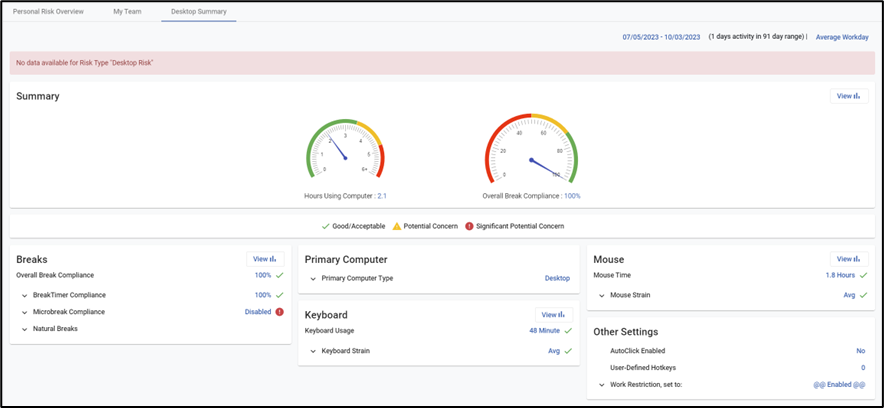
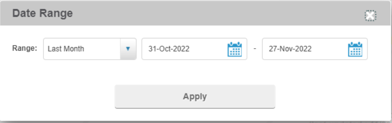
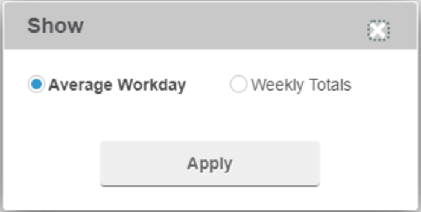

The Desktop Summary is used to track and view a breakdown of computer use by users such as breaks taken, keyboard usage, primary computer and additional screens, mouse time, and other settings based on the company's preference.
Note: This tab only displays if you have RSIGuard installed and enabled (Admin > Enable RSIGuard Risk system setting).
In the Personal Risk window, click the Desktop Summary tab. 
To view a specific date range, at the top right click the displayed date range. Select a new date range and click Apply.

If the link next to the date range says "Average Workday", you can click it to change the view to Weekly Totals instead. Alternatively, if the link next to the date range says "Weekly Totals", click the link to change the view to Average Workday.
